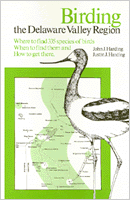

<body bgcolor="#FFFFFF" text="#000000" link="#0000FF" vlink="#CC0000" alink="#CC0000"><center><hr width="350" size="1" align="center" noshade>All the facts about common and uncommon birds in the Delaware Valley<hr width="350" size="1" align="center" noshade><p><a href="https://cdcshoppingcart.uchicago.edu/Cart/ChicagoBook.aspx?ISBN=9780877221791&&PRESS=temple" target="_top">Buy this book!</a> | <a href="https://cdcshoppingcart.uchicago.edu/Cart/Cart.aspx?PRESS=temple" target="_top">View Cart</a> | <a href="https://cdcshoppingcart.uchicago.edu/Cart/Cart.aspx?PRESS=temple" target="_top">Check Out</a></p><p></p></center><!--none//--><h1>Birding the Delaware Valley</h1>
<H2>A Comprehensive Guide to Birdwatching in Southeastern Pennsylvania, Central and Southern New Jersey, and Northcentral Delaware</H2>
<h3>John J. Harding and Justin J. Harding</h3>
<P>cloth 0-87722-179-0 $15.95, Jul 07, <FONT COLOR=#990033>Out of Print</FONT>
<br>paper 0-87722-182-0 $25.95, <FONT COLOR=#990033>Available</FONT>
<BR> 223 pp
5.5x8.25
</P><BLOCKQUOTE><I>"Splendid...extremely useful for anyone birding in your favored area....A Model for other regions of the country."</I>
<br>&#151<b>Roger Tory Peterson</b><I></I></BLOCKQUOTE>
<p>For the thousands of local birdwatchers and the many hundreds of visitors, this glove compartment-sized book places all the excitement and opportunity of the Delaware Valley's 335 species of birds within convenient reach. Huge in coverage yet compact in size, <I>Birding the Delaware Valley Region</I> is the first comprehensive bird-finding guide available for the region.
<p>With detailed directions like "behind the airport," "follow the shabby road off to the left," and "lock the car and walk the railroad tracks," this exuberant handbook tells the birder exactly how to get to the best locations and what to do when he's there. In addition to providing maps showing topographical outlines, it surveys key areas (all within a two-hour drive of Philadelphia) where most of the region's birds can be found: Hawk Mountain, Cape May Point State Park, Ridley Creek State Park, Tinicum Marsh, Brigantine National Wildlife refuge, and Bombay Hook National Wildlife Refuge.
<p>Mini-chapters discuss additional birding "hot spots" famous for great numbers of migrants, and short references to another thirty "spots" round out the regions' bird refuges to more than seventy. Simple cross-checking can be done with the annotated list, the list of accidental or casual species, the bibliography, and the index located at the end of the guide. Every question the visitor might ask and the native might wonder about is answered concisely and fully.
<BR>&nbsp;<H2>About the Author(s)</H2>
<P><b>John J. Harding</b> is a member of the Delaware Valley Ornithological Club, one of the oldest birding organizations in the Untied States.</P>
<P><b>Justin J. Harding</b> is a lifelong birdwatcher.</P>
<BR><H2>Subject Categories</H2>
<p><A HREF="/tempress/nature.html" TARGET="_top">Nature and the Environment</a>
<BR><A HREF="/tempress/philly.html" TARGET="_top">Philadelphia Region</a>
</p>
<p align="center"><a href="https://cdcshoppingcart.uchicago.edu/Cart/ChicagoBook.aspx?ISBN=9780877221791&&PRESS=temple" target="_top">Buy this book!</a> | <a href="https://cdcshoppingcart.uchicago.edu/Cart/Cart.aspx?PRESS=temple" target="_top">View Cart</a> | <a href="https://cdcshoppingcart.uchicago.edu/Cart/Cart.aspx?PRESS=temple" target="_top">Check Out</a></p><p><font face="Arial" size="1"><a href="copyright.html" onMouseOver="window.status='Web Copyright Policy';return true;" onMouseOut="window.status=''" title="Web Copyright Policy">&copy;</a> 2015 <a href="http://www.temple.edu" target="new" onMouseOver="window.status='Link to Temple University home page';return true;" onMouseOut="window.status=''" title="Link to Temple University home page">Temple University</a>. All Rights Reserved. http://www.temple.edu/tempress/titles/205_reg.html</font></p>